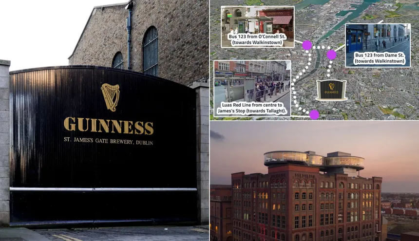
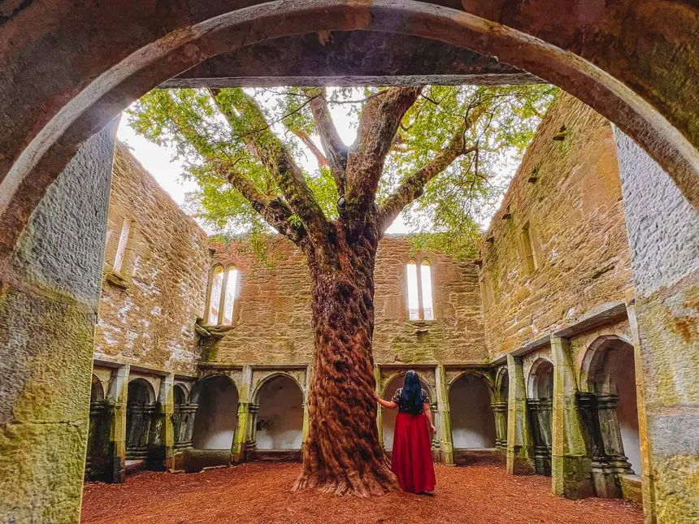
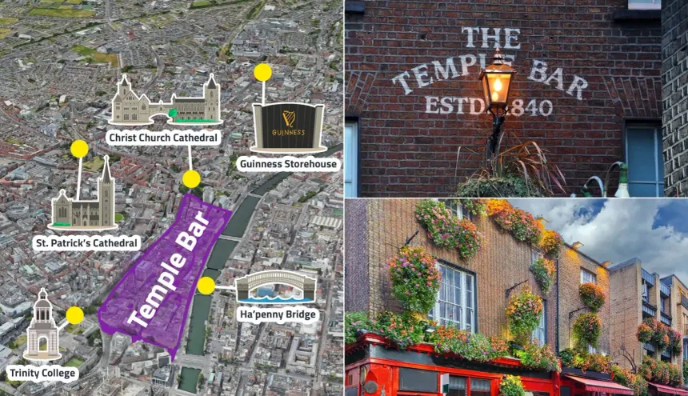

Guinness Storehouse: Visit the iconic building where you can explore the history of Guinness across seven floors, including the artful brewing process and iconic Guinness advertisements. The tour ends with a visit to the Gravity Bar, offering 360-degree views of Dublin city.
Self-Guided Tour: Enjoy a self-guided tour at your own pace, immersing yourself in the sights and sounds of the factory and its exhibitions. This tour includes a pint of Guinness in the Gravity Bar.
Premium Experiences: Enhance your visit with premium experiences like the Connoisseur Experience, which offers a behind-the-scenes look at the Guinness brewing process and a lesson on pouring the perfect pint.
Accessibility: The Guinness Storehouse is adapted for wheelchair users and offers quieter times to visit, ensuring an enjoyable experience for all.
Location: The storehouse is located at St. James’s Gate, Dublin 8, D08 VF8H, Ireland.
Transport Options: You can reach the Guinness Storehouse by walking, cycling, taking the LUAS (tram), bus, or taxi. The LUAS Red Line stops near the entrance, and it's a 10-minute cycle from College Green.
Opening Hours: The storehouse is open Monday to Thursday from 9:30 AM to 5 PM, Friday and Saturday from 9:30 AM to 6 PM, and Sunday from 9:30 AM to 5 PM.
Tickets: Book tickets in advance to avoid queues and ensure entry.
 Phoenix Park, located in Dublin, is one of the largest designed landscapes in any European city, covering 707 hectares, which is more than twice the size of Central Park in New York.
Here are some activities you can enjoy in Phoenix Park:
Dublin's Temple Bar is a vibrant cultural quarter known for its lively atmosphere, cobblestone streets, and rich history. Here are some top activities to enjoy while walking around Temple Bar:
Temple Bar Food Market: Every weekend, Meeting House Square hosts the Temple Bar Food Market, where you can find fresh, high-quality produce, artisanal cheeses, freshly baked bread, organic vegetables, and gourmet street food. This market is a must-visit for anyone who enjoys local flavors.
Photo Museum Ireland: Located in the heart of Temple Bar, this gallery features exhibitions from both Irish and international photographers, offering a diverse range of styles and subjects. It's an excellent place to explore contemporary photography and often hosts talks, workshops, and book launches.
Dublin Castle: Just a short walk from Temple Bar, Dublin Castle is a site of great historical significance. Once the seat of British rule in Ireland, the castle is now a major government complex and tourist attraction.
Icon Walk: This community-led art project in Temple Bar tells the story of some of Ireland’s most famous characters. The panels and plaques are interspersed between graffiti and fire escapes that line side streets and alleys, so you’ll have to keep an eye out as they can be easy to miss.
Love Lane: Christened Love Lane, the walls of Crampton Court make for a colourful visual treat for those passing through. Since its creation in 2014, it has become a popular spot for couples to snap the perfect selfie, with its deconstructed heart mosaic featuring romantic quotes, famous song lyrics, and quips that showcase Dublin's strong wit.
Smock Alley Theatre: Dublin’s oldest theatre, originally built in 1662, is steeped in history and charm. The theatre has been beautifully restored and now hosts a variety of performances, including plays, comedy shows, and live music.
Irish Film Institute (IFI): Cinema enthusiasts will appreciate the Irish Film Institute, a cultural gem in Temple Bar. It’s one of only two arthouse cinemas in Dublin and offers much more than simply a place to watch the latest indie releases.
Vintage Cocktail Club: This 1920s-chic bar is recognized as one of the best cocktail joints in the country and is famed for its multi-award-winning experience. Make sure to ring their doorbell 